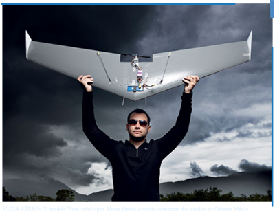

Storm Security
Pequenas Empresas Grandes Negócios
Ex-hacker brasileiro projeta miniaviões para encontrar carros roubados, vigiar fazendas e gerenciar o trânsito.
O tempo não decide entre ensolarado, nublado e chuvoso na Ilha de Guaratiba — bairro do Rio de Janeiro a 45 km do centro. “É bom que a gente já vê se o aviãozinho se garante em qualquer clima”, diz o engenheiro Wanderley Abreu Júnior. É o primeiro teste oficial do seu Veículo Aéreo Não Tripulado (doravante, Vant). Quem olha não dá nada. O aeromodelo mede 1,60 m da ponta de uma asa à da outra e pesa 750 g, mas tem versões maiores — de 3,5 kg e de 20 kg. O design também não é o forte, mas isso não parece preocupar Abreu Júnior. Seu negócio não é fabricar as aeronaves, mas o sistema de câmeras e sensores infravermelhos que as transforma em robôs de vigilância e monitoramento de tráfego.
Os Vants desenvolvidos pelo brasileiro são bem diferentes daqueles que ficaram conhecidos por custarem milhões de dólares e participarem de ações militares como a Guerra do Afeganistão e a captura de Bin Laden. Fazem parte de uma nova leva de veículos mais baratos, com menos recursos e projetados para o uso civil. Abreu Júnior não está só. A polícia da Austrália já recomendou ao governo.